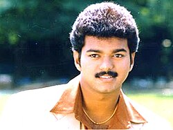

Actor-Vijay
Actor | Politician | Singer |Producer
About Vijay
Joseph Vijay Chandrasekhar (born 22 June 1974), known professionally as Vijay, is an Indian actor and politician who works in Tamil cinema. In a career spanning over three decades, Vijay has acted in 68 films and is one of the most commercially successful actors in Tamil cinema with multiple films amongst the highest-grossing Tamil films of all time and is amongst the highest paid actors in India. He has won several awards as an actor. Referred to as "Thalapathy" (transl. Commander), Vijay has a significant fan following.
Early life and family
Vijay was born as Joseph Vijay Chandrasekhar on 22 June 1974 in Madras (now Chennai), Tamil Nadu. His father, S. A. Chandrasekhar, is a film director and his mother, Shoba Chandrasekhar, is a playback singer and vocalist. His father is of Christian descent and his mother is a Hindu. Vijay had a sister, Vidhya, who died when she was two years old. Vijay did his schooling initially at Fathima school, Kodambakkam and later at Balalok school, Virugambakkam. He pursued a bachelor degree in visual communication from Loyola College, but dropped out early to focus on his acting career.
Film career
1984–2003: Debut and transition to lead roles
At the age of 10, Vijay made his debut as a child actor in the Tamil film Vetri, produced by P. S. Veerappa in 1984.[10] He then acted as a child actor in films such as Kudumbam (1984), Vasantha Raagam (1986), Sattam Oru Vilayaattu (1987) and Ithu Engal Neethi (1988). He also acted in a supporting role with Rajinikanth in Naan Sigappu Manithan (1985), directed by his father.
Vijay played the lead role for the first time in Naalaiya Theerpu at the age of 18 in 1992. He then appeared in the films Senthoorapandi, Rasigan, Deva and Coimbatore Mappillai, all of which were successful. In 1996, Vijay acted in Poove Unakkaga, directed by Vikraman, which according to him, gave him his initial break and popularity. In 1997, Vijay acted in Kaalamellam Kaathiruppen and Love Today.
Later, he starred in commercially successful films such as Nerrukku Ner, Kadhalukku Mariyadhai, Ninaithen Vandhai, Priyamudan and Thullatha Manamum Thullum. In 1999, he then acted in the films Endrendrum Kadhal, Nenjinile, and Minsara Kanna.In 2000, he acted in critically successful, Kannukkul Nilavu, which was his 25th film, alongside commercially successful romantic films, Kushi and Priyamaanavale. In 2001, he acted in hat-trick box office successes; Friends, Badri and Shahjahan before starring in the action film Thamizhan alongside Priyanka Chopra in 2002. Later, he appeared in the romantic film Youth and the action film Bagavathi in the same year. Vijay began 2003 with Vaseegara and Pudhiya Geethai.
Favourite Movies
Poove Unakkaga (1996) | Love Today (1997)| Kadhalukku Mariyadhai (1997) | Thullatha Manamum Thullum (1999) | Kushi (2000)
For Main Page visit:
Vijay_filmographyPolitical career

In 2009, Vijay launched his fan club Vijay Makkal Iyakkam. The organization supported the AIADMK alliance in the 2011 assembly elections. The fan club organization contested in the local body elections in Tamil Nadu in October 2021, securing victory in 115 out of the 169 contested seats. On 2 February 2024, Vijay announced the launch of his political party, Tamilaga Vettri Kazhagam (TVK). Political analysts suggested that the TVK party might undergo expansion to other states of India.Vijay deemed the Citizenship Amendment Act 2019 passed by the BJP government as unacceptable as it will disrupt the social religious harmony of the nation.
For More Details visit:
TVK IT WingVijay's Political Speech
Accolades
In 1998, Vijay was awarded the Kalaimaamani by the Government of Tamil Nadu and Vijay received an honorary doctorate from the Dr. M.G.R. Educational Institute for of his achievements in the film industry in 2007. Vijay was awarded the Best International Actor of 2018 in the United Kingdom for his role in Mersal. He has received numerous other awards and accolades for his acting.
For Main Page visit:
AwardsMore Detail:
தமிழக வெற்றிக் கழகத்துடன் தொண்டராக இணையுங்கள்!(To Join TVK Register here!)
| List_of_awards_and_nominations_received_by_Vijay | Super Hit Movies of Actor Vijay| TVK Official Form